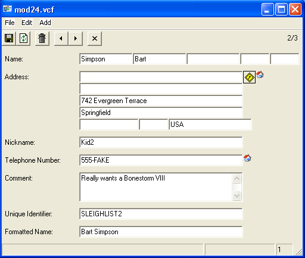

Santa has a long list of contacts to maintain every year with all those nice (and naughty!) children to deliver presents to. Text::vCard (and the companion ::Addressbook) can be used1 to take such a list from a custom (database, CSV2, elf-driven, etc) address book and create a standard (RFC 2426) addressbook, such as this mod24.vcf file for your favorite vCard-supporting application.3 One of the entries is shown below, both as the generated vCard entry and in action.
BEGIN:VCARD
N:Simpson;Bart;;;
ADR;TYPE=home:;;742 Evergreen Terrace;Springfield;;;USA
NICKNAME:Kid2
VERSION:1
TEL;TYPE=home:555-FAKE
NOTE:Really wants Bonestorm VIII
UID:SLEIGHLIST2
FN:Bart Simpson
END:VCARD
1 use Text::vCard; 2 use Text::vCard::Addressbook; 3 4 my @cols = split /,/, <DATA>; chomp @cols; 5 my @rows = map { chomp; my %h; @h{@cols}=split /,/, $_; \%h } <DATA>; 6 7 my $address_book = Text::vCard::Addressbook->new(); 8 9 foreach my $row ( @rows ){ 10 my $vcard = $address_book->add_vcard(); 11 $vcard->version(1); 12 $vcard->fullname( $row->{name} ); 13 $vcard->NOTE( "Really wants a " . $row->{present} ); 14 $vcard->NICKNAME( "Kid" . $row->{id} ); 15 $vcard->UID( 'SLEIGHLIST'.$row->{id} ); 16 my $name = $vcard->add_node({node_type=>'N'}); 17 my ($given,$family) = split ' ', $row->{name}; 18 $name->family( $family ); 19 $name->given( $given ); 20 my $address = $vcard->add_node({node_type=>'ADR'}); 21 $address->add_types('home'); 22 $address->street( $row->{street} ); 23 $address->city( $row->{city} ); 24 $address->region( $row->{state} ); 25 $address->post_code( $row->{zip} ); 26 $address->country( $row->{country} ); 27 my $phone = $vcard->add_node({node_type=>'TEL'}); 28 $phone->add_types('HOME'); 29 $phone->value( $row->{phone} ); 30 } 31 32 print $address_book->export(); 33 34 __DATA__ 35 id,name,present,street,city,state,zip,country,phone 36 1,Ralphie Parker,Red Ryder BB,123 There St,Hammond,IN,46320,USA,219-555-0000 37 2,Bart Simpson,slingshot,742 Evergreen Terrace,Springfield,ST,0000,USA,555-FAKE 38 3,Donald Gardner,two front teeth,1944 School St,Smithtown,NY,11745,USA,631-555-0000
1. Took some trial and error along with this Howto create vCards with perl article by Michael Frankl for a phone number example.
2. In this example we use (lines 4-5) a (bare-bones) hand-rolled CSV reader. For any actual use, Text::CSV, DBD::CSV, DBD::AnyData, or the like can (should) be used instead for robustness.
3. Screenshot is from vCardOrganizer 1.2.5 (neutral usage -- just selected from search results).